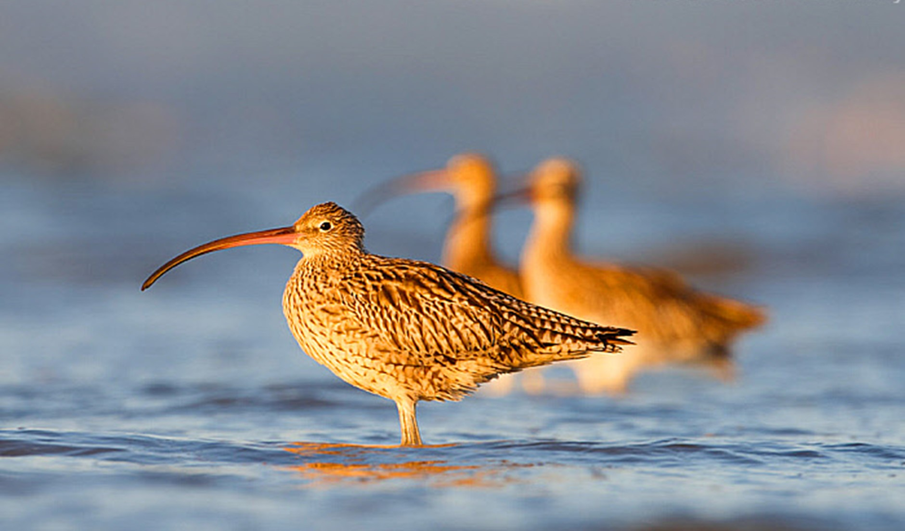
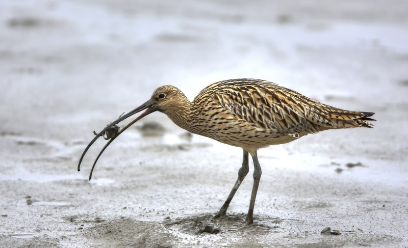
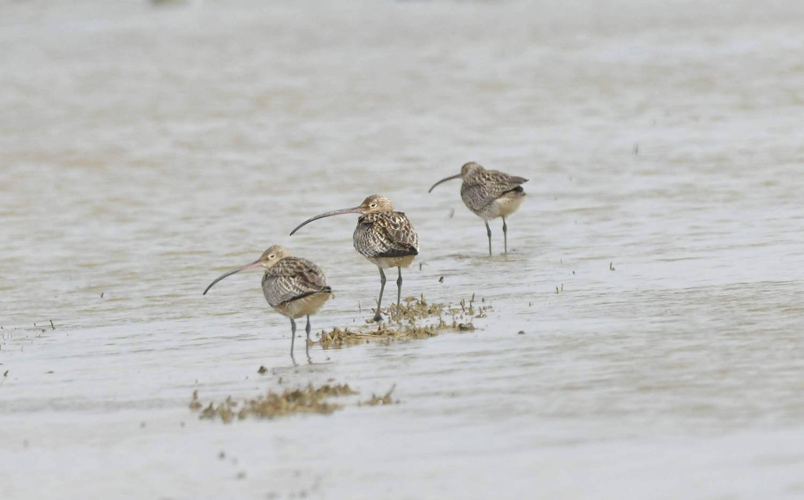

알락꼬리꼬마도요가 알라리꼴라리 꼬마두리랑 도요도요 춤추다가, 꼬마도도
도요리랑 도로롱도롱 돌면서 알라락꼴라락 노래했다. 그랬더니 옆에서
지나가던 알루미늄꼬리뽀짝새가 “알도요 꼬도요 락도요 요요요~” 하면서
박수치고,
꼬마도요는 “도요도요 도요요요 알락알락 꼬리꼬리 꼬마도요
출격!” 하고 하늘로 붕 뜨더니, 갑자기 “알락!” 하며 착지, “꼬리!” 하며
회전, “꼬마!” 하며 윙크, “도요!” 하며 포효했다.
알락꼬리꼬마도요는 도요도요 소리 내며 꼬리 살랑살랑 흔들다가, 꼬마숲 한가운데서 낮잠 자고 있을 때가 있다. 꼬불숲 낙엽 이불 속에서 깜빡 숨바꼭질하고 있을 때도 있다. 알락산 꼭대기 돌멩이 뒤에서 혼자 도요댄스를 추고 있을 때도 있다. 도요늪에서 도요노래 부르며 발끝으로 물장구 치고 있을 때도 있다. 심지어 알락시티 꼬마거리 도요도요마트 앞에서 핫도그 들고 서성일 때도 있다. 그리고 가끔, 아주 가끔은 우리 마음속에도 도요도요한 기분으로 숨어 있을 때가 있다.
알락꼬리꼬마도요는 꼬마늪 갈대밭에서 도요도요 숨바꼭질을 하다가, 꼬물언덕 나직한 구멍 속으로 쏙 들어가 낮잠을 청하기도 한다. 별무늬 논둑 위를 살금살금 걷다가, 반짝돌 옆에 앉아 도요멜로디를 콧노래처럼 흥얼거릴 때도 있다. 꼬물바람 타고 종종걸음치는 모습이 보이다가, 알락분지 연못가에서 발끝으로 도요썰매를 밀고 놀기도 한다. 심지어 도요역 앞 도요도요카페 테라스에서 작은 머핀을 몰래 쪼아먹고 있을 때도 있다. 그리고 아주아주 드물게, 마음 한구석 쓸쓸한 오후에도 도요도요 숨 쉬듯 찾아올 때가 있다.
알락꼬리꼬마도요는 종종 꼬물숲 나뭇가지 사이를 도요도요 넘나들다가, 꼬불바위 그늘 아래서 쏘옥 쉴 때가 있다. 반짝논 둑길을 도요발로 터벅터벅 걷다가, 물웅덩이 거울 앞에서 깜짝 도요춤을 추기도 한다. 구불강가 모래톱에서는 발끝으로 도요그림을 그리며 한참을 놀다가, 꼬마벌판 둥근 풀밭에 철퍼덕 누워 별구름을 세기도 한다. 심지어 알락마을 도요서점 앞 벤치에서 작은 책 한 권 들고 꾸벅꾸벅 졸고 있을 때도 있다. 그리고 가끔, 아주 가끔은 우리 기억 속에서도 살랑살랑 도요바람이 되어 숨어 있다.
